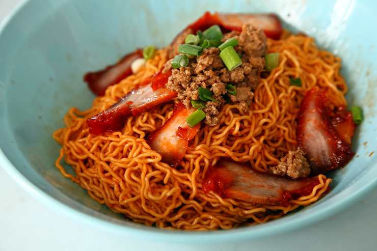

Kolo Mee

Description
Ingredients
- 1 Tbsp vegetable oil
- 2 Tbsp dried onion flakes
- ½ Tbsp vegetable oil
- 2 small shallots, finely diced (or 1/2 small onion)
- 4 cloves garlic, minced
- 1 lb lean ground pork
- 1 tsp chicken bouillon powder
- 1 Tbsp fish sauce
- 1 Tbsp light soy sauce
- ¼ tsp ground white pepper
- water for boiling noodles
- 1 package (340g) fresh thin Chinese egg noodles or dried thin, Chinese egg noodles
To serve
- 1 green onion, chopped
- ¼ lb roasted BBQ pork (char siu), sliced (optional)
- 6-8 cooked wontons (optional)
- pickled chilies (optional)
- hot sauce , eg. sriracha or garlic hot sauce
Instructions
- Heat a large wok over medium high heat. Add 1 Tbsp of vegetable oil and add in the onion flakes. Lightly fry for about a minute by continuously stirring the onion flakes until golden brown (but not burnt). Turn off the heat, and transfer the flakes into a small bowl. Set aside.
- Using the same wok, turn the heat to medium high and add in 1/2 Tbsp oil, shallots and garlic. Fry until lightly fragrant, about 1-2 minutes.
- Crank the heat up to high and add in the ground pork, breaking it up into small pieces. Cook for about 5-6 minutes, stirring occasionally, until no longer pink.
- Add in chicken bouillon powder, fish sauce, soy sauce, and white pepper. Mix to incorporate everything together. Turn off the heat and transfer the meat to a bowl.
- Heat a large pot of water and let it come to a boil. Add in the egg noodles and cook according to package directions, about 2-3 minutes, or until al dente. Pour the noodles into a colander and rinse under cold water. Drain noodles and portion into serving bowls.
- Top the noodles with the 2-3 heaping tablespoons of the warm ground pork mixture, green onions, sliced BBQ pork (char siu), wontons, pickled chilies, and fried onion flakes.
- Mix the bowl thoroughly to coat the noodles and serve immediately.